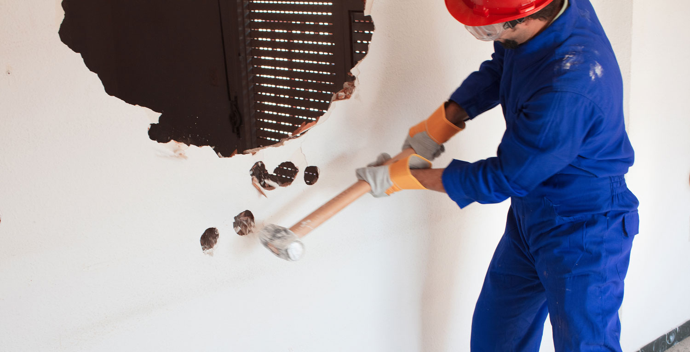
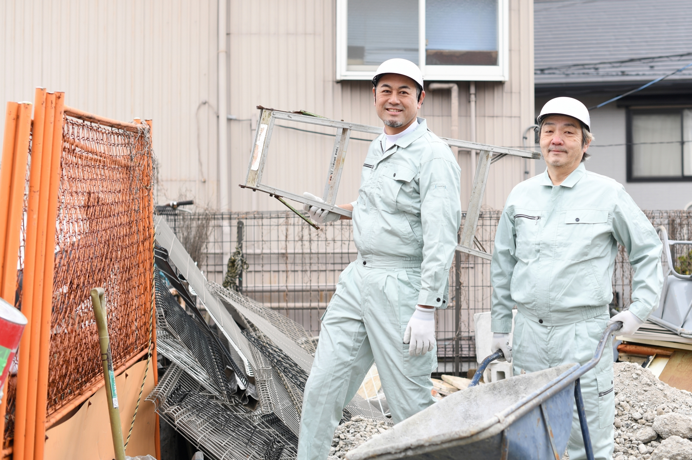

株式会社Aoiは、松戸市を拠点に一都三県で解体工事を行う会社です。
建物解体・内装解体・店舗スケルトン工事など、さまざまな現場に対応しています。
現場では安全を第一に、チームで声を掛け合いながら作業を進めています。
未経験の方も、まずは道具の使い方や現場での動き方から覚えていけるため、安心してスタートできる環境を整えています。
私たちは様々な解体工事に対応しており、幅広い現場で経験を積むことができます。
戸建て住宅やマンションなど、建物の解体工事を行います。
周囲の安全に配慮しながら、現場ごとに適した方法で作業を進めます。
リフォームや改装に伴う、室内の解体作業を行います。
壁・床・天井などを丁寧に撤去し、次の工事へとスムーズにつなげます。
店舗の退去や改装に合わせて、内装を解体しスケルトン（骨組み）状態に戻します。
店舗や商業施設など、幅広い現場で経験を積めます。

最初は先輩スタッフの補助からスタートします。現場の流れや道具の使い方を少しずつ覚えられるので、経験がない方も安心して飛び込んできてください。
仕事に必要な資格取得を会社が支援しています。働きながら一生モノのスキルを身につけ、できる仕事の幅をどんどん広げていける環境です。
一都三県を中心に、建物解体・内装解体・店舗工事など幅広い現場があります。毎回違う現場で経験を積めるため、飽きがこず成長しやすい環境です。
解体工事や建設現場の経験がある方は、これまでのスキルを存分に活かせます。経験や能力に応じて給与も優遇し、現場でしっかり活躍していただけます。
新しい街づくりを
一緒に支えませんか？
ご質問だけでも大歓迎です！
お気軽にご連絡ください。
解体工事は、次の建物や新しい空間をつくるために欠かせない仕事です。安全に作業を進めるためには、チームワークと丁寧な仕事が大切です。
株式会社Aoiでは、経験よりも前向きに取り組む姿勢を評価します。未経験の方も、先輩スタッフがしっかりサポートします。
手に職をつけたい方、安定して働きたい方、現場で成長したい方は、ぜひご応募ください。
もちろんです。未経験の方でも先輩がしっかりサポートしますので、お気軽にご応募ください。
経験や能力を考慮し、日給13,000円～のスタートとなります。
日給月給制になります。
一都三県（東京都・埼玉県・千葉県・神奈川県）が主になります。